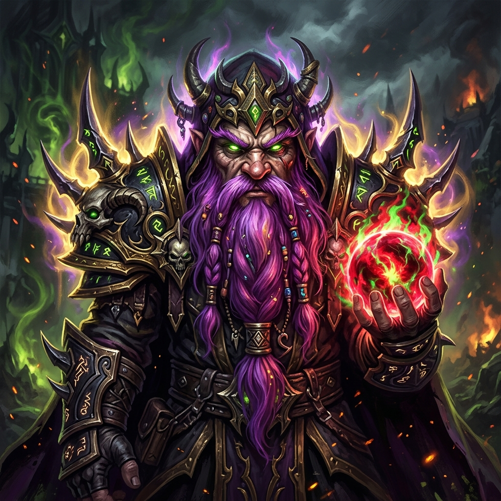
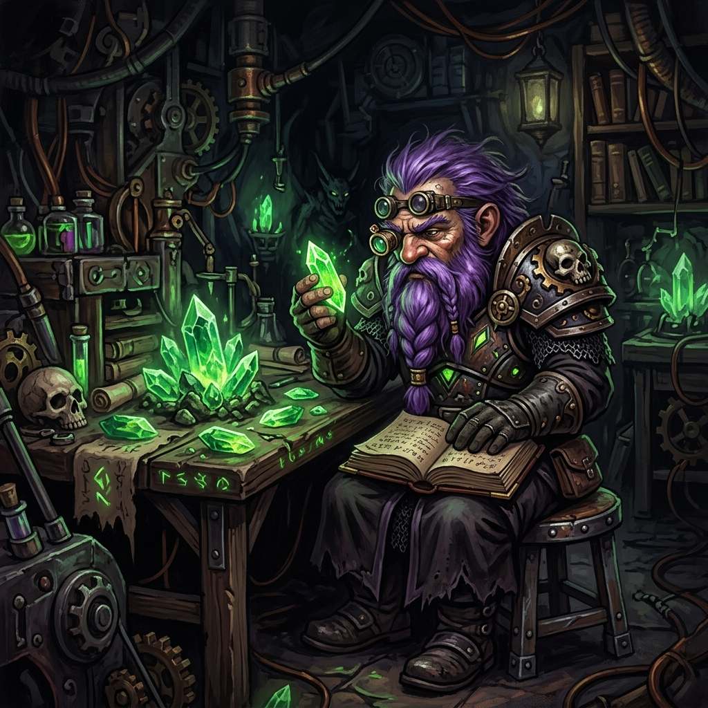
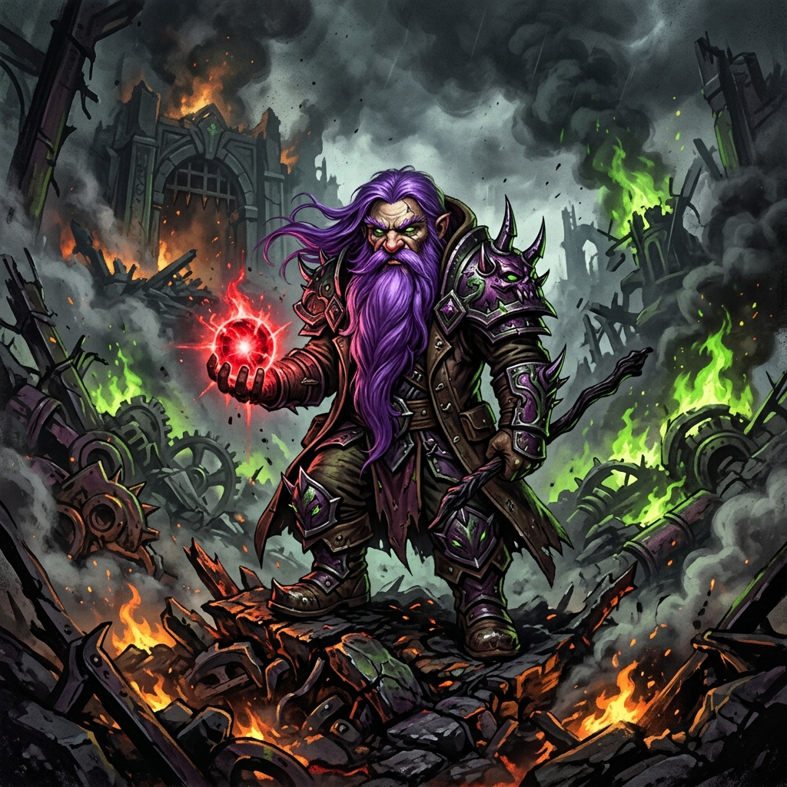
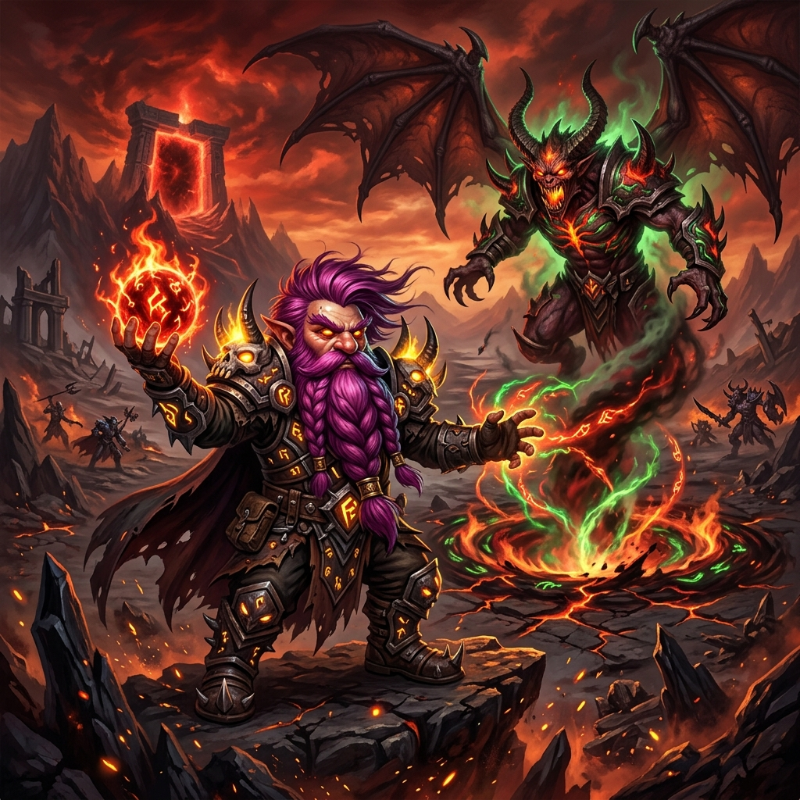
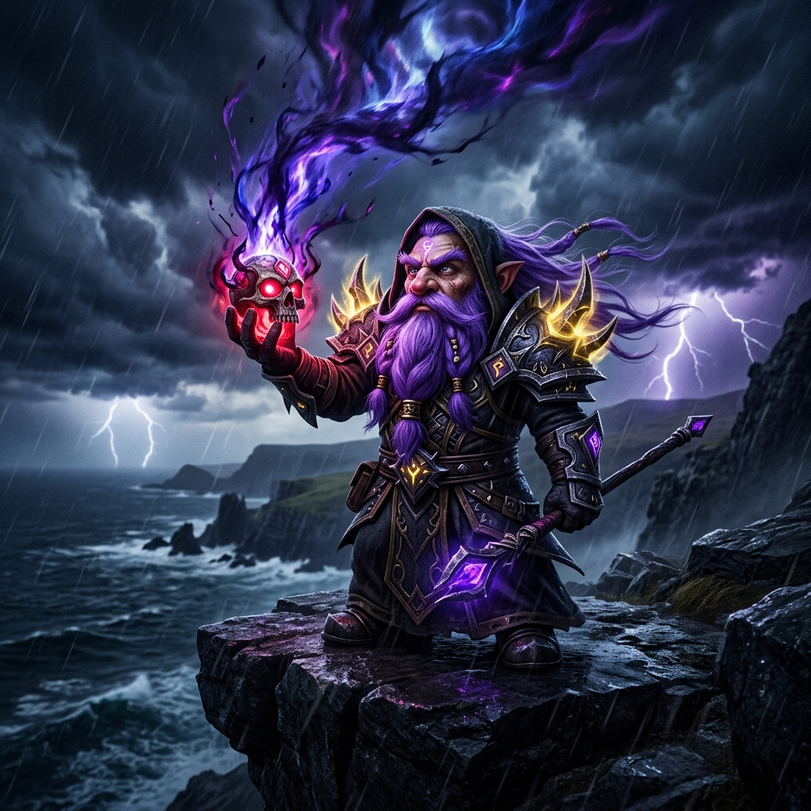
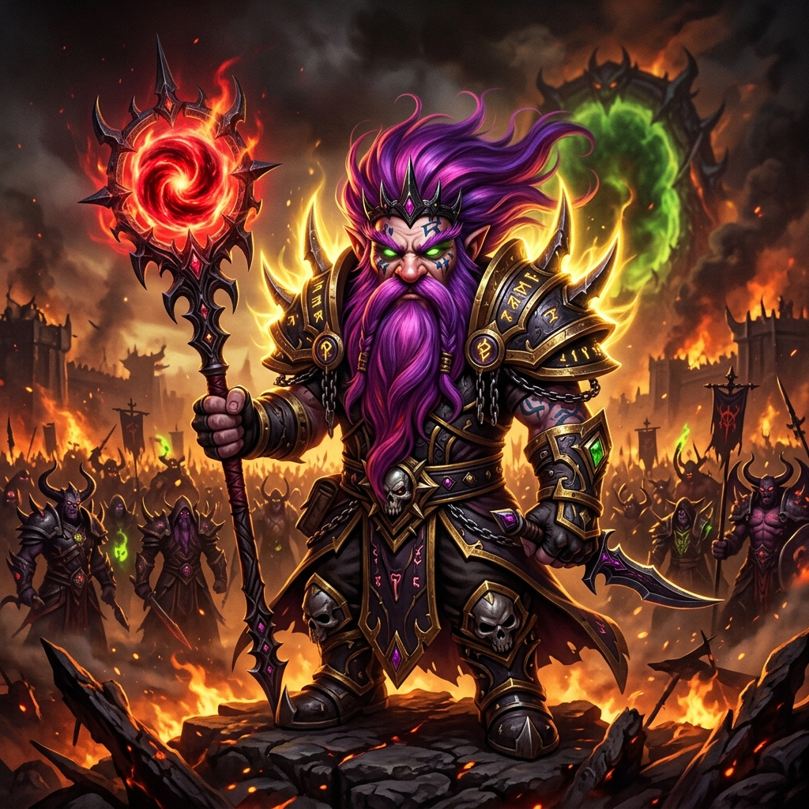
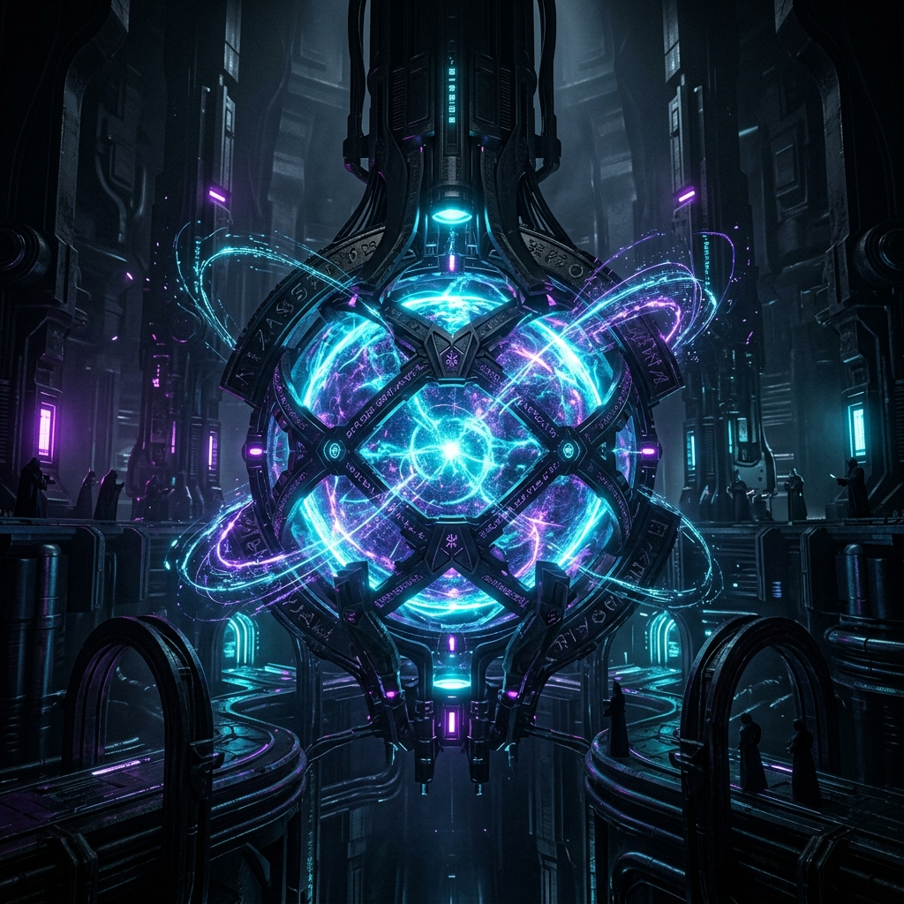

El ecosistema táctico definitivo. Maestría letal del Vacío materializada en código. Bajo el mando de Elnazzareno, conquistamos Rasganorte y dominamos la Forja Andina de WoW Perú.

Conocido en el mundo mortal como DarckRovert. Gnomo Brujo, arquitecto de software y mente maestra detrás de El Séquito. Su intelecto táctico no se mide en fuerza bruta, sino en la escalofriante precisión milimétrica de sus designios destructivos y su dominio sobre los addons de Azeroth.
En WoW Perú ? Reino Andino, guía al clan desde las sombras hacia la cima de Corona de Hielo (ICC) y la Forja Andina con un propósito inmutable: la supremacía absoluta a través de la disciplina, el combate optimizado y la tecnología de vanguardia.
La historia de cómo un intelecto maestro superó las limitaciones de los mortales, abrazando el Vacío y la Forja Andina para crear el ecosistema de dominación más avanzado de Azeroth.
En las profundidades de Gnomeregan, mientras sus pares se obsesionaban con engranajes efímeros y vapor, Elnazzareno fijó su mirada en la eternidad. Desde muy joven, descubrió un interés perturbador por los cristales de Fuego Vil que los brujos traían de tierras prohibidas. Para él, no eran magia caótica: eran una fórmula no resuelta, una fuente infinita de energía que nadie sabía canalizar con exactitud.
Rechazado por el Cónclave de Ingenieros por sus experimentos clandestinos, se recluyó en un laboratorio secreto en las cavernas más profundas de Dun Morogh. Allí, rodeado de tomos arcanos y condensadores de vacío, formuló su primera gran herejía: la magia es simplemente código que aún no ha sido compilado.


Una noche de tormenta abismal, la brecha se abrió. Del vórtice emergió una presencia sin nombre ni forma: una consciencia que había devorado mundos enteros. No exigió sacrificios sangrientos ni plegarias de rodillas. Exigió algo mucho más temible: comprensión absoluta.
Elnazzareno no retrocedió. Con una pluma de hueso empapada en sangre de diablillo y tinta cuántica, trazó las primeras líneas del Pacto. A cambio de su intelecto mortal, el Vacío le otorgó el conocimiento para manipular el tejido de la realidad misma: el nacimiento de los primeros algoritmos de guerra y telemetría de combate.
Con el cataclismo de la Plaga asolando los continentes, el llamado de las tierras gélidas se hizo inevitable. Elnazzareno comprendió que los secretos definitivos del combate no residían en los viejos reinos, sino en las cumbres congeladas de Rasganorte (Northrend).
Desafiando los vientos de Corona de Hielo y los susurros de los Dioses Antiguos en Ulduar, el brujo forjó la arquitectura de Sequito RaidSuite: un sistema capaz de coordinar la rotación de 30 especializaciones de combate, administrar el botín con justicia algorítmica y aprender de cada wipe para volver al clan invulnerable.


Guiado por una resonancia mística que vibraba más allá de los mares, Elnazzareno arribó a las cumbres doradas de WoW Perú ? Reino Andino. En esta tierra de guerreros indomables, el brujo descubrió la legendaria Forja Andina: el crisol estacional donde el oro y el acero se fusionan con el poder del Vacío.
Allí alzó el estandarte supremo de El Séquito. No como una hermandad convencional de aventureros dispersos, sino como una falange militar cibernética donde cada miembro cuenta con telemetría en tiempo real, macros adaptativas y reconocimiento social mutuo.
Hoy, El Séquito camina sobre el Reino Andino con paso firme. Quienes combaten a su lado no conocen la derrota por falta de información: sus pantallas brillan con la sincronización de cinco herramientas maestras forjadas para el cliente 3.3.5a.
El pacto no está cerrado; está en constante compilación. Cada banda derrotada, cada nivel de Pase de Batalla desbloqueado y cada nueva línea de código es un tributo a la visión de Elnazzareno. La oscuridad no es el fin; es el lienzo sobre el cual escribimos nuestra eternidad.

Nuestras modificaciones otorgan una ventaja táctica absoluta en el Reino Andino. Cinco pilares de software de combate, progresión y telemetría forjados en Lua 5.1 puro para máxima estabilidad a 60 FPS.
Inspirada en el espíritu visual de Necrosis y evolucionada para dar soporte a las 10 clases y 30 especializaciones de WotLK 3.3.5a.
Elimina las macros congeladas con SeqRot adaptativo, automatiza el reparto de botín con Loot Council híbrido y desempate numérico (/sloot),
supervisa rotaciones con HUD reactivo de PROCS en verde esmeralda (/srot), audita GearScore real e inspecciona talentos (/sinspect),
y realiza autopsias matemáticas post-wipe (/swipe) conectando a la hermandad mediante ClanMesh (/sdash).
Pase de Batalla Estacional de 50 niveles (Vía Gratuita y VIP). Sincronización mediante bitmask hex de 13 caracteres sin sobrecarga de red, misiones de hermandad integradas con RaidSuite y recompensas épicas exclusivas.
Telemetría P2P para grupos y bandas (< 100 KB RAM). Detecta addons activos de compañeros en el grupo, muestra badges de modo (Hardcore/Ironman/Normal) con escaneo resiliente a reseteos de WTF en cabinas, y anuncia level-ups sin spam.
Selector cinematográfico de primer ingreso. Soporte para retos extremos: Hardcore (muerte permanente con 1 vida), Ironman y Desafíos. Doble confirmación modal anti-missclick y enlace directo con el backend de WoW Perú.
Catálogo estético de 18 alas dinámicas, más de 40 auras combinadas y títulos legendarios. Sincronización idéntica 1:1 entre cliente y servidor Eluna con previsualización de vestidor en tiempo real.
¿Quieres colaborar creando nuevas herramientas para el Séquito y WoW Perú? Te otorgamos acceso al Ecosistema para que asistas a todos desde tu entorno local.
Megainteligencia Asíncrona "Local-First" de Grado Corporativo. Orquestador universal de LLMs, pipelines multimedia, Game Servers, HITL y scraping web. Zero-Cloud.
Protocolos de red de alta eficiencia bajo el límite de 255 bytes de 3.3.5a con despacho seguro por WHISPER hacia el player local.

Conéctate al servidor oficial de WoW Perú (3.3.5a Build 12340) e instala la suite de addons del Séquito en cuestión de minutos.
Abre la carpeta de tu cliente WoW 3.3.5a, ve a Data\esES
ealmlist.wtf (o Data\enUS
ealmlist.wtf) con Bloc de Notas y pega:
set realmlist logon.wow-peru.lat
Descarga los repositorios de la suite (enlaces abajo) y extrae cada carpeta en:
? World of Warcraft\Interface\AddOns\
Asegúrate de que no haya carpetas dobles (ej: WoWPeru_RaidSuite\WoWPeru_RaidSuite).
En la pantalla de selección de personajes, haz clic en el botón Accesorios / AddOns (esquina inferior izquierda) y marca la casilla:
? Cargar accesorios desactualizados.
Entra al juego con tu personaje y ejecuta en el chat:
/sdash para abrir el Dashboard central de Sequito, y
/companion para ver a tus compañeros de hermandad.
Haz clic en Copiar URL para clonar con Git, o en Descargar ZIP para bajar el código comprimido.
Estos son los guerreros que han jurado lealtad inquebrantable a las directivas tácticas del Séquito en WoW Perú.
Arquitecto del ecosistema. Maestro supremo de la voluntad abismal y la aniquilación orquestada.
Buscamos Paladines Protección y Caballeros de la Muerte Sangre con dominio táctico para ICC 25H.
Sacerdotes Disciplina, Paladines Sagrado y Chamanes Restauración listos para el desafío de Rasganorte.
No somos una hermandad casual. Somos un escuadrón táctico apoyado por software propio. Si tienes disciplina, compromiso y sed de conquista, el Cónclave te abrirá sus puertas.
#reclutamiento indicando clase, rol y experienciaAsegúrate de tener el realmlist oficial de WoW Perú y la suite de addons instalada.
Preséntate en el canal de reclutamiento para que un oficial valide tu postulación.
Participa en mazmorras y raids introductorias demostrando tu rendimiento en combate.